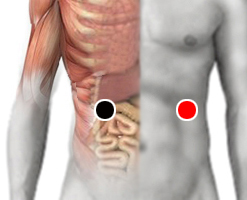

H1N7
Par
vesícula - bazo

Generalidades:
Pertenece a los virus de la Influenza A. Primeramente encontrado en cerdos de granja que presentaron síntomas moderados. Es un virus emparentado con el H1N1, también llamado virus de la Gripe aviar del 2009, por lo que suponemos que la evolución de la infección en humanos sea muy similar. La alopatía no tiene registro de este virus en humanos.
Síntomas:
Trastornos nasales, sinusitis, rinitis, tos, conjuntivitis, fiebre alta, pérdida de apetito, dolor muscular. La infección puede presentar cuadros agudos (0.45 - 1% de los infectados) en personas inmunodeprimidas.
Transmisión:
De persona a persona por vía aerea.
: